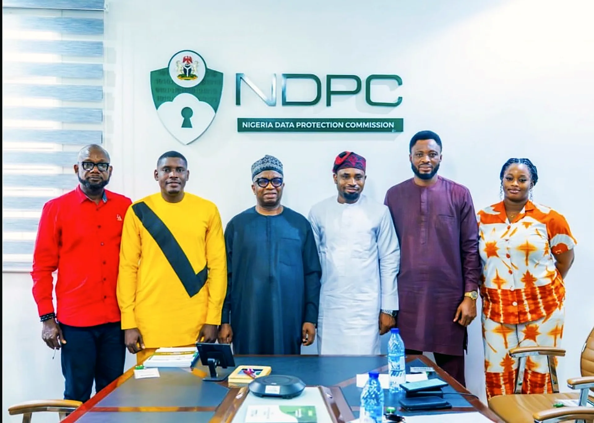

Share your expertise
Propose a speaker or topic for a future webinar, masterclass or chapter gathering.
Propose a talk
Members, organisations and supporters all have a place in Abuja’s technology community.
Propose a speaker or topic for a future webinar, masterclass or chapter gathering.
Propose a talk
Support professional learning, policy engagement and community programmes. Partnerships are agreed directly with the chapter secretariat.
Discuss a partnership
Help extend technology access and digital skills to schools and young people through Computer-4-Schools and Tech Kids Dev.
Offer support
Contribute to Techies’ Hangout, Computer-4-Schools, events, membership or communications.
Volunteer with usThe chapter connects institutions and businesses with experienced technology professionals among its members.
Talk to the chapter
Tell us about the challenge your institution or business faces.
We introduce qualified NCS members with relevant experience.
Work together directly towards practical outcomes.